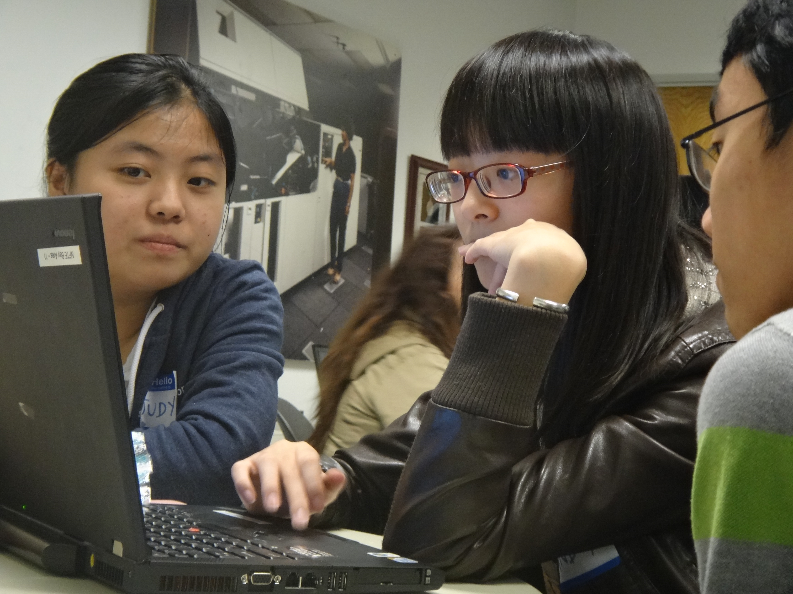
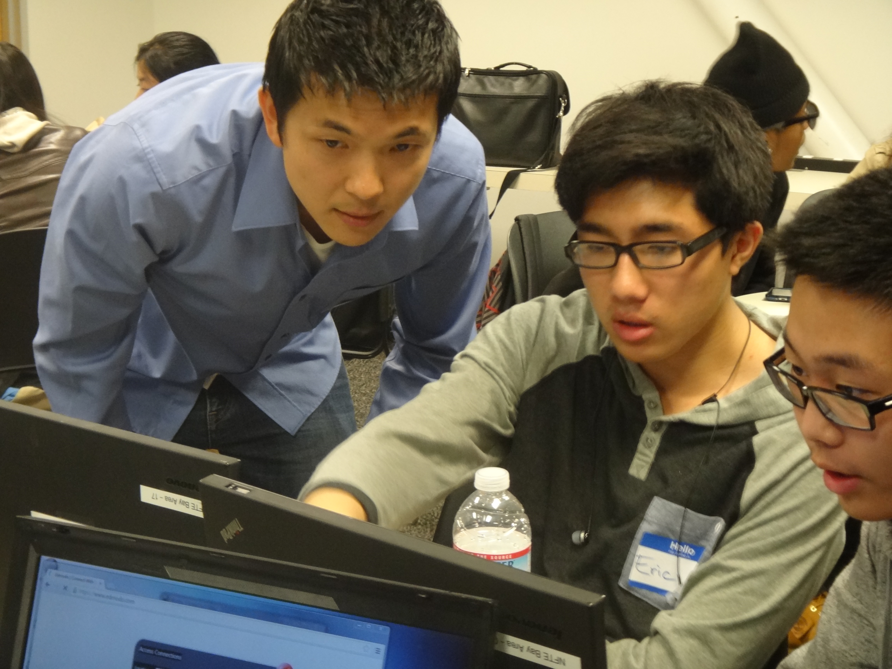
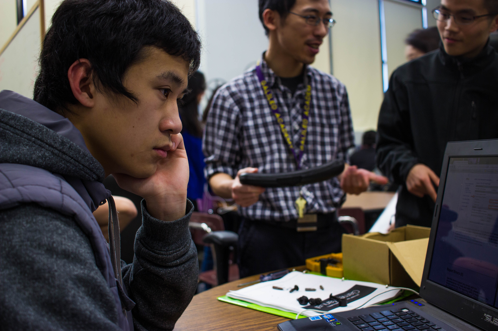
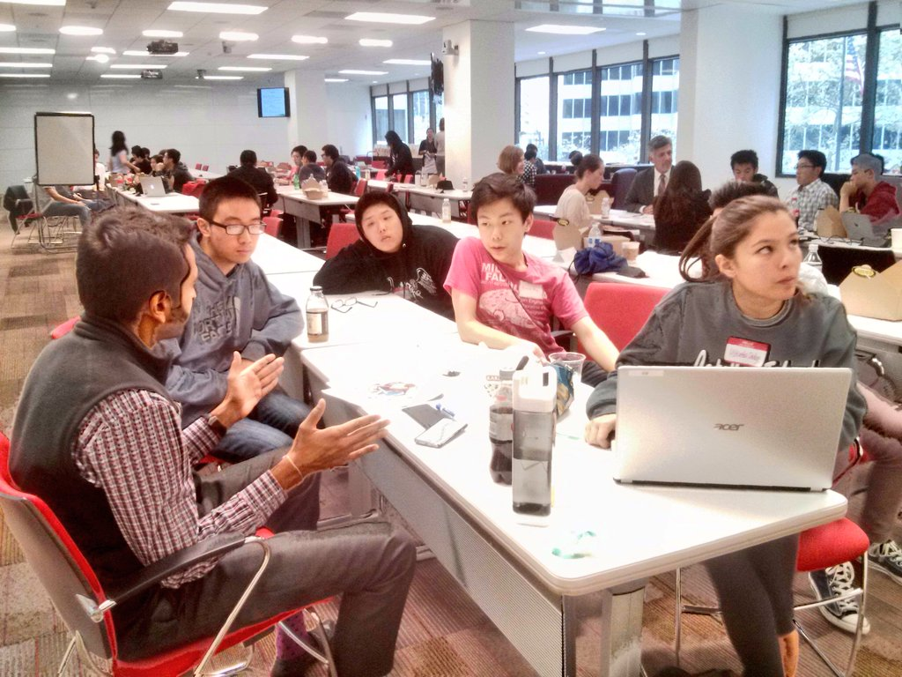

Courses focus on learning computer science concepts through inquiry and projects.

Themes and practices include the creative nature of computing, problem-solving using technology as a tool, and seeing the relevance and impact of computer science.

Students in CSA take their Computer Science class and their English class together with the same students. The teachers work to build projects and skills across the curriculum – together we form a small learning community.

College and career skills are built into the courses to prepare students for higher education and future work as computing professionals.